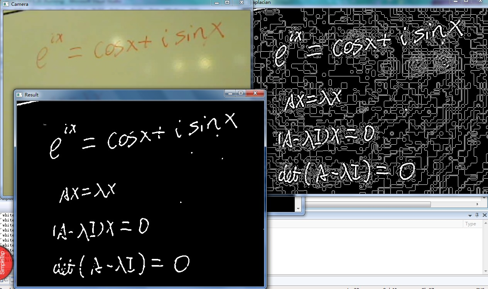
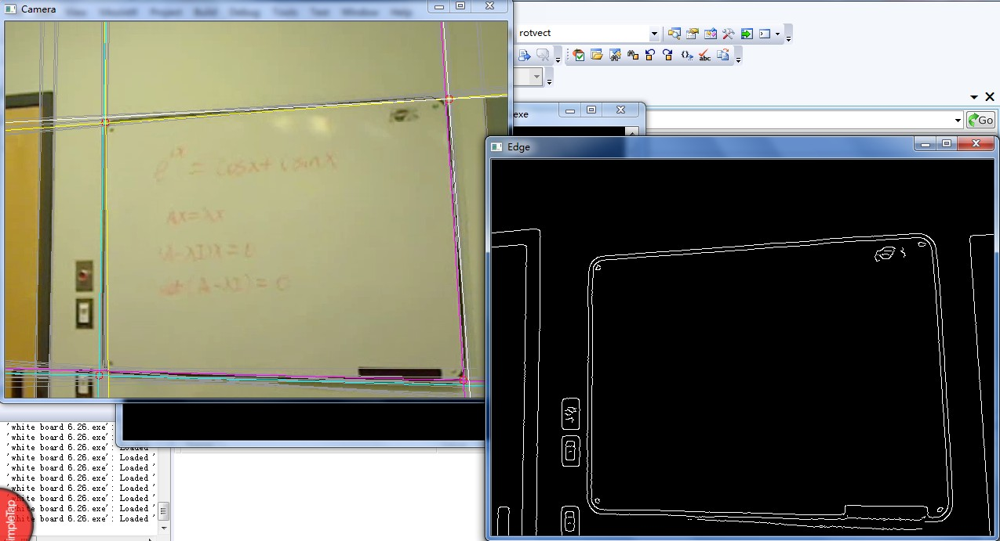
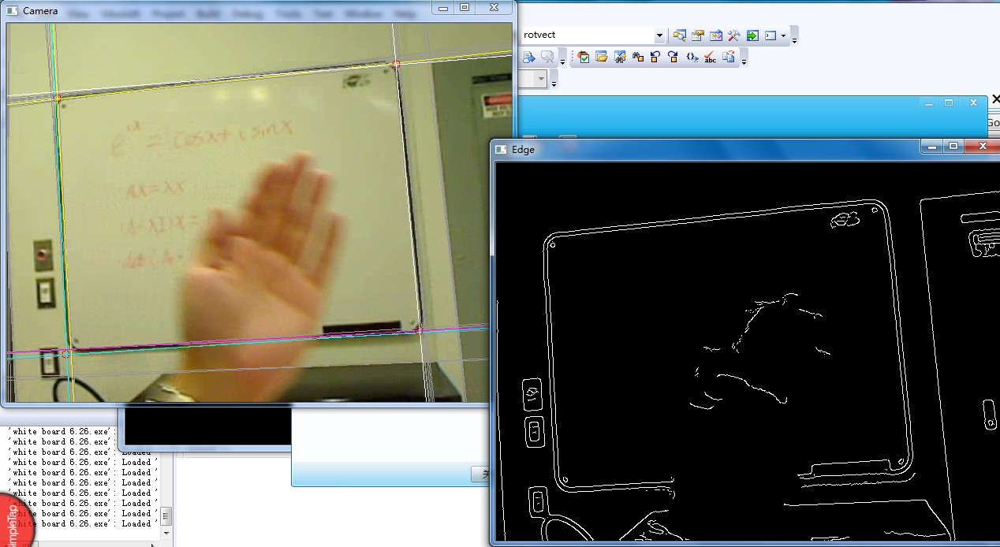

Black board rectification and text reconstruction
The goal of this project is to convert board writing to electronic version in order to use on web as open course material . What I have done is a part of this project.
The first task is to detect text on board. I use different ways to extract text, such as canny, SUSAN, simple gradient, and Laplacian edge detectors. Finally I choose to use Laplacian edge detector for that performance of other detectors depend on thresholds. After using Laplacian detector, I simply use zero as fixed threshold to decide it’s text or not. As you know, Laplacian detector is very noisy, on the contrary, a good thing is it preserves text the best compared with other detectors. I use morphological transform to deal with the noise. I tested with white boards and ‘green’ boards as you will see at school, and the results are satisfying.
Another task is to determine the four corners of a board. It is not an easy task as it sounds. I cannot use corner detector for that some corners of a board may be not sharp enough, and there are many corners in an image other than board corners. What I use here is first use canny to detect edges, and then take hough transform to find every possible line in an image. As we will expect, there will be lots of lines in an image. It is very difficult to reject those lines from edges of a door or a desk.
After tried many ways, I decided to assume a board is in the middle of an image, and I divided an image into four quadrant. I assume one corner of a board will be in one quadrant respectively. So the problem is to find a corner most probably belongs to a board in each quadrant. First of all, I compute every intersection of two lines I found. Let’s take the top left quadrant as an example. I have many intersections in this quadrant, and if a corner is belong to a board, the gradient along the edges of the board will be very large. So what I did is to sum up the gradient(or more generally, difference orthogonal to the direction of a line) along those two lines which intersect on this point to the right and bottom direction(for the top left quadrant), and find the point with maximum gradient sum as the board corner. And repeat this for other quadrants.
By doing so, I can find robust corners of a board and eliminate those corners not belong to board. As you will see in the result images, I can find the corner even though the board has round corners.
 |
| Text detection |
{kind=link}
 |
| Corner detection. Two lines in the same color indicate along which lines I got maximum gradient sum. (The gray lines are discarded by my algorithm) |
{kind=link}
 |
| I can find the right corner even something blocked the boarder. |
{kind=link}